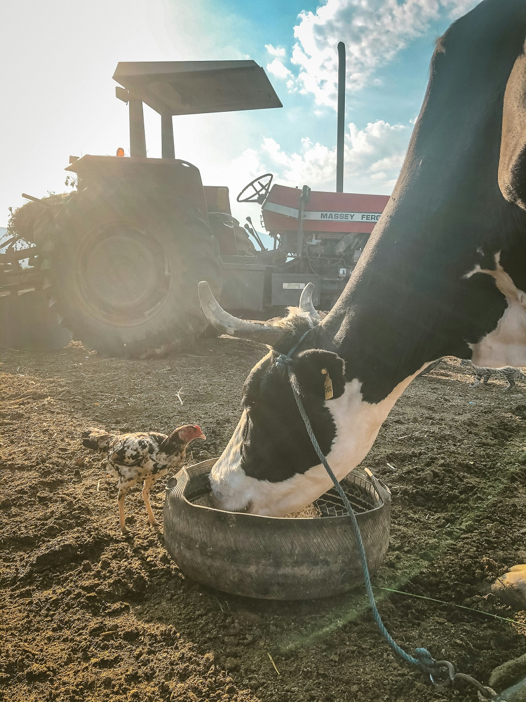

Farmer Resilience
Support better practices, knowledge and dependable routes to market.

Climate-smart farming, waste reduction and community investment — sustainability guides every decision we make.
From eco-conscious processing to responsible herd management, we aim to protect the environment while improving economic outcomes for the farmers we work with.
Sustainability isn’t a separate program at Xipton Group — it’s built into how we source, process and train, so that the land and the communities around it stay healthy for the next harvest, and the one after that.
Training in soil conservation and agroforestry.
Reusing by-products and recycling where possible.
Supporting education, women’s groups and youth.
Figures are illustrative placeholders — replace with your verified operating figures.
Shade-tree and soil-conservation training that protects long-term coffee yield.
Coffee husks and dairy waste redirected where possible instead of discarded.
Careful water use in processing and herd management to reduce strain on local supply.
Contributing to local education initiatives in the communities we operate in.
Dairy training programs designed to build skills and confidence for women-led enterprises.
Practical livestock and post-harvest workshops that open income opportunities for young farmers.
Our sustainability work focuses on practical improvements that can strengthen farms, protect resources and create durable value across the agricultural chain.
Partner for ImpactSupport better practices, knowledge and dependable routes to market.

Encourage responsible use of land, water, animals and agricultural inputs.

Create room for people and communities to participate in value creation.